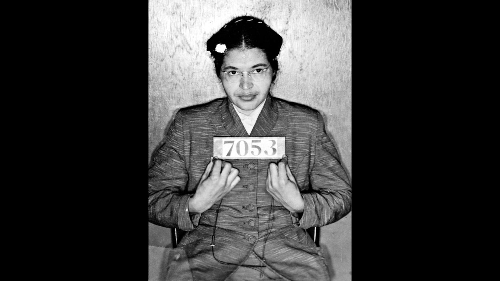

Universidad: Highlander Folk School
Montgomery, 1914
Estados Unidos
12 de marzo del 2024
Rosa Parks
En la historia de la lucha por los derechos civiles en Estados Unidos,
el nombre de Rosa Parks brilla con un resplandor especial como símbolo de valentía,
dignidad y resistencia.
Rosa Parks, nacida el 4th de febrero de 1913 en Tuskegee, Alabama,
se convirtió en un ícono de la lucha contra la segregación racial y la injusticia sistémica
que prevalecía en la sociedad
estadounidense del siglo XX.
Desde temprana edad, Rosa Parks experimentó
de primera mano la discriminación racial y la desigualdad
en su comunidad.
Sin embargo, en lugar de aceptar pasivamente
estas injusticias, se convirtió en una defensora incansable de la justicia y la igualdad.
Su negativa a ceder su asiento en un autobús segregado en Montgomery, Alabama, el 1 de diciembre de 1955,
desencadenó el famoso Boicot de Autobuses de Montgomery y marcó un
punto de inflexión crucial en la lucha por los derechos civiles en Estados Unidos.
A partir de ese momento, Rosa Parks se convirtió en una figura central en el movimiento por los derechos
civiles y continuó abogando por la igualdad y la justicia hasta el final de sus
días.
Sus acciones y logros marcaron un hito significativo en la historia de la lucha por los derechos civiles en Estados Unidos.
Entre sus destacados logros se incluyen:
Logros de rosa parks
- Desafío al sistema de segregación
- Liderazgo en el boicot de autobuses de Montgomery
- Activismo continuo por los derechos civiles
- Inspiración para generaciones futuras
Mas adelante se comparte un artículo que ofrece una visión detallada sobre la vida y el impacto de Rosa Parks. El artículo, titulado "Rosa Parks: Mujer Negra que no Cedíó su Asiento a Blanco en Autobús", ofrece una mirada esclarecedora sobre su valentía y su papel en la historia.

Algunos lugares que desempeñaron un papel importante en la vida de Rosa Parks y en su lucha por la igualdad racial:
lugares significativos asociados con la vida de Rosa Parks
Tuskegee, Alabama:Este es el lugar donde Rosa Parks nació y creció.
Montgomery, Alabama: Montgomery fue donde Rosa Parks se convirtió en una figura icónica en el movimiento por los derechos civiles.
Avenida Cleveland, Montgomery: La parada de autobús en la Avenida Cleveland, cerca del Teatro Empire, donde Rosa Parks subió al autobús y se negó a ceder su asiento, es un lugar significativo en la historia de los derechos civiles.
En este video, se profundiza en la valentía y la determinación de Rosa Parks, una figura icónica del movimiento por los derechos civiles en Estados Unidos.
Expliaccion sobre Rosa Parks
sdavlil.org